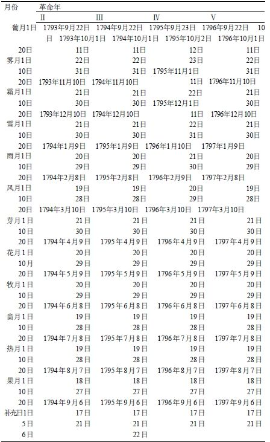
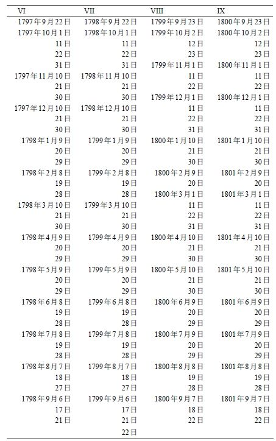

1793年10月设立，回溯至9月22日，即宣布成立共和国的纪念日；官方使用这一历法直至1806年。该历法中月份由法布尔·戴格朗丁命名，目的在于让人联想起季节，但其翻译并不容易。不过，当时一些刻薄的英国人把它们译为：Slippy，Nippy, Drippy; Freezy, Wheezy, Sneezy; Showery, Flowey, Bowery; Heaty, Wheaty, Sweety。共12个月，每月30天，余下的5天最初称为无套裤汉日，但督政府时期改称补充日。下表为革命历与格里高利历的对照：

